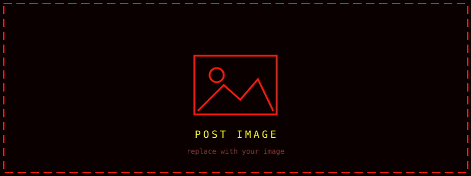

P_N0VA Portfolio Site
Retro-Themed Web Experience
Technologies: HTML5, CSS3, JavaScript, CreateJS
A retro-themed portfolio website inspired by late-90s JRPG menu systems. Features include animated sliding windows, motion trails, and impact effects that create a nostalgic gaming experience while showcasing modern web development skills.
P_N0VA Portfolio Site
Key Features
- Custom CreateJS animation system
- JRPG-inspired UI design
- Responsive layout for all devices
- Smooth page transitions with cardinal movement
- Interactive firefly particle effects
P_N0VA Portfolio Site
Development Notes
The animated logo was authored in Adobe Animate and exported to CreateJS, with the runtime driving a sprite-sheet timeline. The window system is pure CSS flexbox with a JavaScript animation layer on top, so the site stays fully functional even with scripts disabled.
Live Demo: View Project →